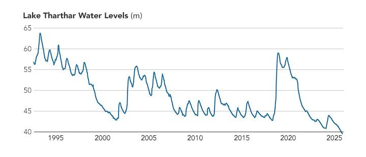
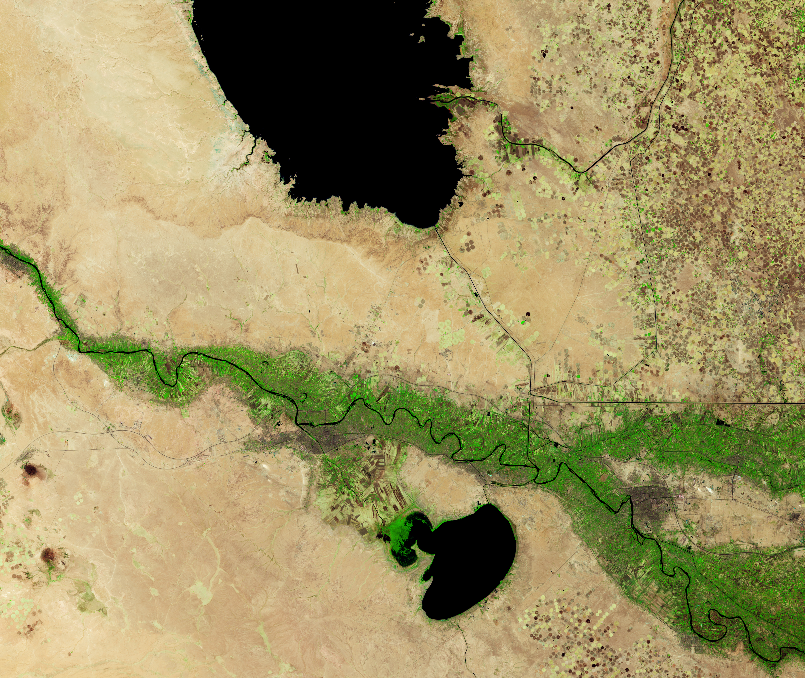

Iraq Reservoirs Plunge to Low Levels
Satellite observations of Lake Tharthar show that the reservoir’s water levels have swung sharply during the past three decades.
The lake, Iraq’s largest, lies within a broad natural depression between the Tigris and Euphrates rivers, although its water comes only from the Tigris. During periods of excess flow, water managers divert floodwater from the river at the Samarra barrage via a canal into the reservoir. These inflows usually cause water levels to spike in the spring, when snowmelt in the headwaters of the Tigris in Türkiye and Iran joins with runoff from seasonal rains.
However, a lack of snow and rain, along with upstream diversions, have starved the reservoir of inflow in recent years, preventing water levels from rising in 2021, 2022, and 2023. Despite a slight improvement in 2024, plunging water levels have accompanied the multi-year drought.
In October 2025, water in Lake Tharthar dropped to its lowest level observed in a satellite-based record dating back to 1992. The data come from Global Water Measurements, a NASA project that integrates altimetry observations from several satellites. A similar effort, the Database for Hydrological Time Series of Inland Waters, put Tharthar’s water levels below 40 meters (130 feet) that month—more than 20 meters lower than the peak observed after floods in 1993.
Longer-term ground-based observations confirm the satellite findings, according to Hassan Njeban, a geographer at the University of Thi-Qar in Nasiriyah. By mid-October, gauge data showed Lake Tharthar water levels at their lowest point since the reservoir’s construction in 1958, falling to 38.5 meters above sea level.
The false-color satellite images above (bands 6-5-4), captured by the OLI (Operational Land Imager) on Landsat 8, show how much the lake shrank between September 2020 (left), when the reservoir was near capacity, and October 2025 (right), after years of weak inflow from the Tigris. The surge in water levels in 2019 was fueled in part by a low-pressure system and an atmospheric river that delivered record-breaking rainfall over two days in March. Land along the canal was still flooded in 2020 but has since dried out and been repurposed for agriculture, as it was during earlier dry periods.
A similar evolution has played out at nearby Habaniya Lake, a reservoir fed by the Euphrates. Like Tharthar, Habaniya nearly filled in 2019 after the same weather event produced intense rains and flooding. However, by September 25, 2025, Habaniya was so depleted that it could no longer discharge water back to the Euphrates, said Njeban. “The water level on that day was 42.05 meters above sea level, and the stored water volume was approximately 555 million cubic meters, compared to its total storage capacity of 3.3 billion cubic meters,” he added. By mid-October, water levels dropped to 41.90 meters and storage volume fell to 511 million cubic meters.
Njeban is currently working on a project that uses Landsat observations to analyze how drought and other factors have affected Iraq’s major lakes over the past several decades. “Climate change—manifested in rising temperatures, increasing evaporation rates, and decreasing rainfall—has contributed greatly to the drying of Iraq’s inland water systems, including our lakes, marshes, and wetlands,” Njeban said. These impacts, he added, have been intensified by upstream water management policies.
Meanwhile, farmers living around the lakes and throughout Iraq face water challenges. Officials from the country’s water ministry reported that water reserves hit 80-year lows in August. To conserve water for urban use, they restricted the types of crops that can be grown and limited irrigation. Many farmers had to abandon fields or relocate their operations. To replenish the river and deliver water downstream, the ministry deployed “massive pumps” to move water from Lake Tharthar to the Tigris, according to Njeban.
In the short term, Njeban hopes that winter rains will help, and that drought impacts can be mitigated by keeping some water in the lake, regulating agricultural withdrawals, and encouraging water-saving practices. “In the long term, integrated management among the Habaniya, Razzaza, and Tharthar reservoirs is essential for achieving sustainable regional water balance,” he said. Satellite data, he noted, play a key role. “Landsat has proven highly useful for tracking changes in the surface area, shoreline position, and turbidity of all of Iraq’s major lakes.”